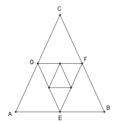

Aufgabe 126 a1) Wie groß ist die Summe der Weizenkörner, die entsteht, wenn man mit einem Korn auf dem ersten Feld eines Schachbretts beginnt und die Anzahl auf den nachfolgenden Feldern jeweils verdoppelt? a2) Wieviel t wiegen die Körner, wenn 20 Körner 1 g wiegen? a3) Wie groß ist die Summe der Weizenkörner, die entsteht, wenn auf das erste Feld 1 Korn, auf das zweite 3 Körner, auf das dritte 5 Körner usw. kommen? b) Das Dreieck ABC ist gleichseitig. Verbindet man die Seitenmitten miteinander, entsteht das gleichseitige Dreieck EFG usw. Wie groß sind der Flächeninhalt A und der Umfang U aller Dreiecke?

a1) a1 = 1 q = 2 264 - 1 s64 = 1 * --------- 2 - 1 s64 = 18 446 744 073 709 551 615 Körner a2) 18 446 744 073 709 551 615 m = ---------------------------- = 20 = 922 337 203 685 477 581 g = 922 337 203 685 478 kg = 922 337 203 685 t a3) Es ist eine arithmetische Folge mit a1 = 1 und d = 2: an = a1 + (n - 1) * d a64 = 1 + 63 * 2 = 127 Körner 64 s64 = ---- * (1 + 127) = 4 096 Körner 2 b) AB = a EC = h Umfang: U1 = 3 * a = a1 a EF = --- 2 a U2 = 3 * --- 2 a U3 = 3 * --- 4 1 q = --- 2 Es ist eine unendliche geometrische Reihe: 3 * a U∞ = --------- = 6a 1 - 0,5 Flächeninhalt: Satz von Pythagoras im Dreieck AEC: a a a2 = (---)2 + h2 | -(---)2 2 2 a2 a2 - ---- = h2 4 3 h2 = --- * a2 |√ 4 a h = --- * √3 2 a a * --- * √3 2 a2 A1 = -------------- = ---- * √3 = a1 2 4 A1 besteht aus 4 gleichgroßen Dreiecken --> A1 1 A2 = ---- --> q = --- 4 4 Es ist eine unendliche geometrische Reihe: a2 ---- * √3 4 a2 * √3 a2 A∞ = ------------ = ----------- = ----- 1 3 √3 1 - --- 4 * --- 4 4